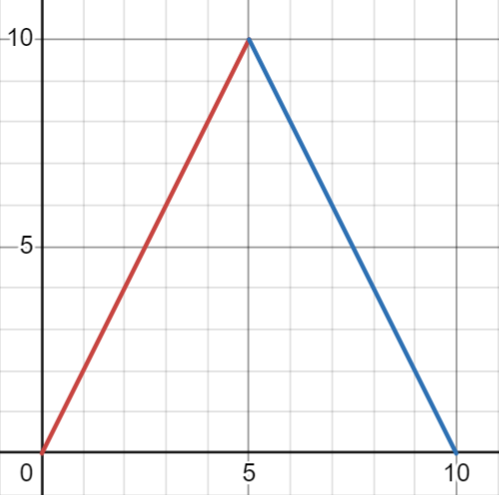

Concept Introduction
Chapter 0 - Page 3
In general, finding the slope of a straight line is simple
But what about when we add more straight lines to the equation?

What is the slope of this graph?
Think About It
Back
Next